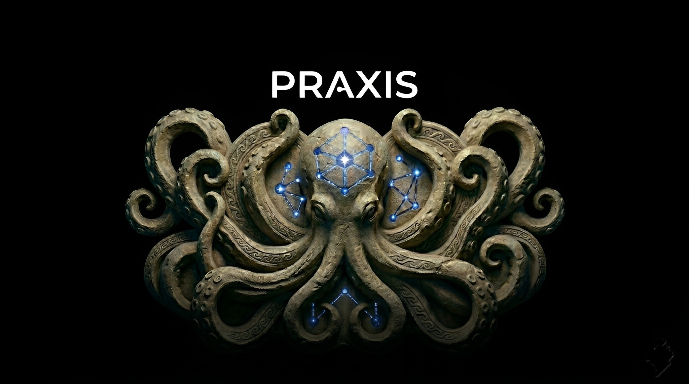
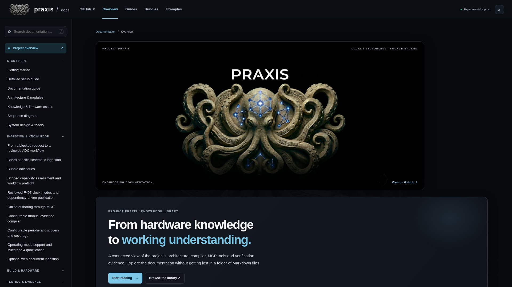
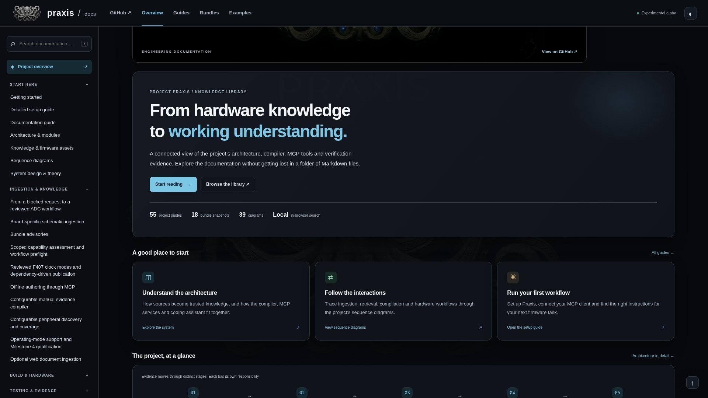

From hardware referencesto firmware development.

typedef struct {
__IO uint32_t MODER;
__IO uint32_t OTYPER;
__IO uint32_t OSPEEDR;
__IO uint32_t PUPDR;
__IO uint32_t IDR;
__IO uint32_t ODR;
__IO uint32_t BSRR;
} GPIO_TypeDef;
__IO uint32_t MODER;
__IO uint32_t OTYPER;
__IO uint32_t OSPEEDR;
__IO uint32_t PUPDR;
__IO uint32_t IDR;
__IO uint32_t ODR;
__IO uint32_t BSRR;
} GPIO_TypeDef;
<net name="PD12">
<node ref="U4" pin="59" />
<node ref="R40" pin="1" />
</net>
<net name="LD4_ANODE">
<node ref="LD4" pin="1" />
<node ref="R40" pin="2" />
</net>
<node ref="U4" pin="59" />
<node ref="R40" pin="1" />
</net>
<net name="LD4_ANODE">
<node ref="LD4" pin="1" />
<node ref="R40" pin="2" />
</net>
Engineering sources, linked.
query_schematic_netlist("LED_A")
LED_A → PD12
MB997-E-01 · schematic, pages 4 & 7
read_wiki_index()
STM32F407G-DISC1 · MB997-E-01
rcc.mdread_peripheral_doc("rcc")
gpio.mdread_peripheral_doc("gpio")
usart.md[[peripherals/gpio]]
Read clocks before pins.
GPIO · Register map
BSRR
Vectorless retrieval.Source-backed Markdown.
The assistant writes the firmware.
Isolated builds.Approved flashing.

Experimental alpha.
github.com/Iheb-AG/praxis